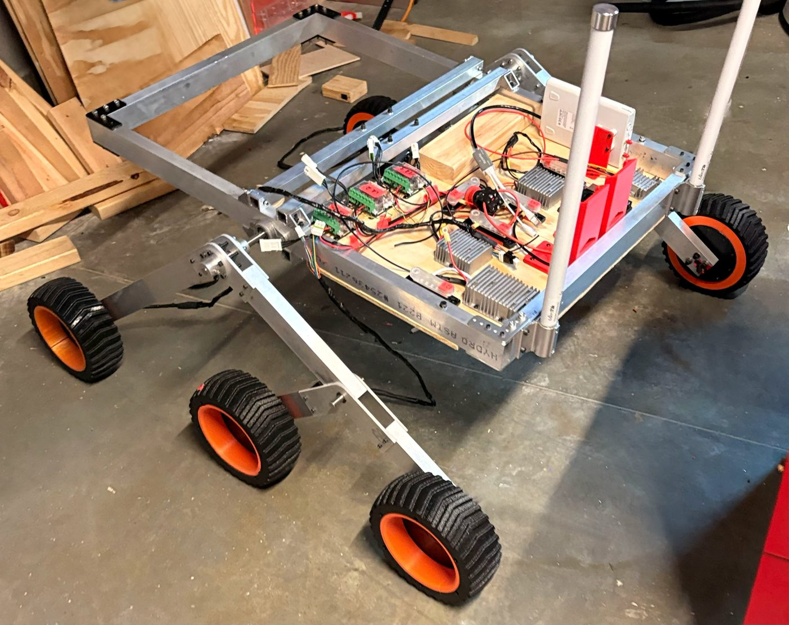

Mechanical Engineering · Washington University in St. Louis
Leo Zheng
I am a Mechanical Engineering student at WashU in St. Louis, Missouri. I’m passionate about robotics and designing mechanical systems, and am looking for experience in a hands-on design role.

About Me
I am from Kansas City, Missouri, and my passion for mechanical design began when I competed in FIRST Tech Challenge with Belton Robotics. Designing, building, and programming our robots showed me how much I enjoy taking a design from an idea to a working machine.
Currently, I'm on the rover chassis team for WashU Robotics, where I design the wheels and suspension system for our URC rover. I am also a teaching assistant for the machine shop course at WashU.
Education
B.S. Mechanical Engineering
Washington University in St. Louis
Class of 2029
GPA: 4.00
Activities
- WashU Robotics – Rover Chassis Member, University Rover Challenge
- Teaching Assistant for MEMS 1100 – Machine Shop Practicum
Awards & Certifications
- Dean's List
- Certified SOLIDWORKS Professional (CSWP)
- Certified SOLIDWORKS Associate (CSWA)
Skills
Computer-Aided Design
- 3D Modeling with SOLIDWORKS (CSWP)
- Finite Element Analysis (FEA)
- 2D Engineering Drawings
Design for Manufacturing
- Tolerancing and Fits
- Engineering Drawing Interpretation
- Precision Measurement and Inspection
Machining & Fabrication
- ProtoTRAK CNC
- FeatureCAM
- TRAK 2OP
- Knee Mill
- Lathe
- Bandsaw
- 3D Printing
Programming
- Python
- C++
- Raspberry Pi
Leadership & Communication
- Leadership
- Mentoring
- Project Management
- Technical Documentation
Contact Info
I'm actively looking for mechanical design internships where I can help take real hardware from CAD model to working prototype. You can reach out to me by email or LinkedIn.
- Email lz.leo.zheng@gmail.com
- LinkedIn linkedin.com/in/lzleozheng
- Location St. Louis, MO · Kansas City, MO